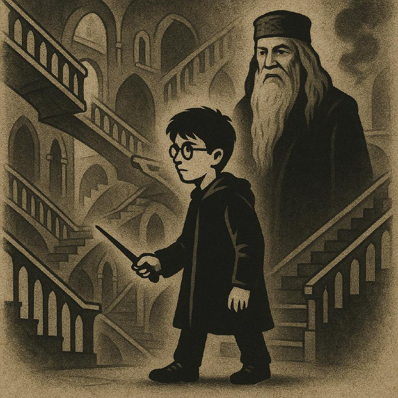

Тексты
Люблю теорию самодетерминации
В её основе — три базовые психологические потребности: автономия, компетентность и причастность. Когда все три удовлетворены, человек чувствует внутреннюю мотивацию, энергию и вовлечённость. Когда хотя бы одна из них подавлена — начинаются проблемы: прокрастинация, выгорание, потеря смысла...
Читать дальшеБританская и русская традиция тьюторства
Тьютор в британской традиции — наставник, сопровождающий студента в процессе обучения и развития. В русской традиции тьюторство появилось позже и приобрело свою специфику. Разница не только в методах, но и в самом понимании роли: кто такой тьютор — помощник, проводник или партнёр?...
Читать дальшеВспоминаю
Работал менеджером проектов в строительной компании. Потом стал заниматься бизнесом. Продавал, покупал, строил, терял. Каждый раз казалось — вот сейчас найду то самое. А потом понял, что искать нужно было не снаружи, а внутри...
Читать дальше«Basic income» наступает!
Ещё одна попытка понять — что можно порекомендовать сегодняшнему 12-летнему человеку. Мир меняется быстрее, чем мы успеваем к нему адаптироваться. Искусственный интеллект, автоматизация, новые формы занятости — всё это уже здесь. И базовый доход из утопии превращается в реальность...
Читать дальше
Лестница Хогвартса
Современный мир можно представить как лестницу Хогвартса — человек движется уверенно, но мир вокруг крутится. Ступени сдвигаются, направления меняются. И единственный способ не потеряться — понимать, куда ты идёшь, и уметь перестраиваться на ходу...
Читать дальшеНе могу работать без музыки
Причём, чем больше когнитивная нагрузка, тем громче. И более грубая, что ли, музыка. Когда пишу тексты — нужен эмбиент. Когда разбираю сложную задачу — рок. Когда рутина — что-нибудь ритмичное. Мозг как будто сам выбирает саундтрек под задачу...
Читать дальшеКак нащупать интересы
Дима. 16 лет. 10 класс. Учится на английском в частном лицее. Родители говорят: ему ничего не интересно. Сам Дима говорит: я не знаю, чего хочу. Знакомая ситуация. Вот что мы делали и что из этого вышло...
Читать дальшеПервый бизнес параллельно с вузом в 20 лет
Максим — жизнерадостный и самодостаточный парень двадцати лет. Учится в вузе и параллельно запустил свой первый бизнес. Не стартап из акселератора, а настоящее дело — с клиентами, выручкой и ошибками. История о том, как совмещать учёбу и предпринимательство...
Читать дальше